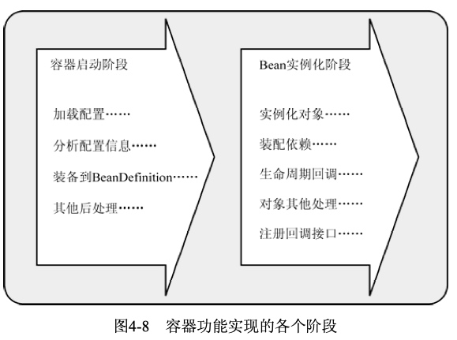

Spring IoC
IoC 概念
IoC 即 Inversion of Control 控制反转。是 Spring 最重要的一个概念。即 Spring 的容器会维护各种对象，在你需要的时候将控制权交到你手上，而避免了因为主动控制对象带来的耦合性。
依赖注入
依赖注入(DI)是实现控制反转的一种方式。
依赖注入一般有三种方式
- 构造器注入
- Setter 方法注入
- 接口注入
假设存在两个相互依赖的类：
public class Classes {
// 依赖类
private Boy boy;
public Classes(){
// 在当前对象中直接 new 出依赖类
boy = new Boy("Bob");
}
public void run(){
boy.run();
}
}
public class Boy {
String name;
public Boy(String name){ this.name = name}
public void run(){}
}
构造方式注入，即在对象构造时传入一个依赖对象来完成注入。
public class Classes {
// 依赖类
private Boy boy;
public Classes(Boy boy) {
this.boy = boy;
}
public void run() {
boy.run();
}
}
setter方法注入，通过 set 方法来设置需要依赖的类，不用一定在构造时设置更加灵活。
public class Classes {
//....
private Boy boy;
public void setBoy(Boy boy){
this.boy = boy;
}
//....
}
接口注入通过实现特定接口来注入对象
// 定义注入接口
public interface BoyInjection {
void inject(Boy boy);
}
//
public class Classes implements BoyInjection {
//....
private Boy boy;
@Override
public void inject(Boy boy) {
//实现接口中的方法
this.boy = boy;
}
//....
}
通过实现接口来注入需要的对象，一般不大使用。
Spring 配置
Spring IoC 提供了一个集中管理 Java 对象的方式。那么这种 Java 对象配置就需要 Bean 来定义。
Bean 即依赖注入需要管理的一种标准化的对象。
Bean 定义使用 BeanDefinition 类来描述。一般包含以下信息：
- 类名，即定义 Bean 对象的地方。
- Bean 的表现行为，作用域，生命周期等。
- 需要依赖的其他对象。
- 其他配置。
具体如下：
Class与 bean 绑定的类。Name，用于标识 Bean，name 可以有多个，但是 id 是唯一的。- 如果同时指定多个 name 但是没有 id，以第一个 name 作为标识。
- 如果同时指定 name 和 id，此时 id 为标识，name 为别名，但是都可以通过 getBean 来获得。
- 可以通过 alias 指定别名，别名也是唯一的。
Property，属性，可以指定依赖或者值。Scope，作用域。Constructor arguments，构造参数。Autowiring mode，注解注入模式。Lazy initialization mode，是否懒加载。- 其他属性和参数设定参照文档
Java 方式
@Configuration
public class AppConfig
{
@Bean
public MyService myService() {
return new MyServiceImpl();
}
}
- 类必须被
@Configuration注解。 - 使用
@Bean注解，在配置中注册Bean，函数返回对象作为 Bean。
注解方式
@Component，类似 XML，注解一个类作为 Bean。在任何层都可以使用。@Autowired注入 Bean。属性，方法，方法参数都可以用。默认按类型注入。@Resource同样注入 Bean，但是默认按名称注入。
需要在配置中定义：
@ComponentScan(basePackages = "com.java")
有时候后我们的容器不知道要注入哪个对象，就需要解决歧义性，用于解决歧义性的注解：
@Primary，注解 Bean 时，用于定义优先级。@Quelifier，注入时，过滤特定的 Bean。
XML 方式
Spring 2.0 之后使用Schema XML 格式来描述配置。Schema 的好处是可以让不同的配置文件有自己的命名空间。
ApplicationContext.xml 为默认的配置文件。
基本格式：
<?xml version="1.0" encoding="UTF-8"?>
<beans xmlns="http://www.springframework.org/schema/beans"
xmlns:xsi="http://www.w3.org/2001/XMLSchema-instance"
xsi:schemaLocation="http://www.springframework.org/schema/beans http://www.springframework.org/schema/beans/spring-beans.xsd">
</beans>
<!-- 以 classpath 为根目录 引入其他配置 -->
<import resource="otherjuice.xml"/>
<!-- 配置 source 原料 -->
<bean name="source" class="pojo.Source">
<property name="fruit" value="橙子"/>
<property name="sugar" value="多糖"/>
<property name="size" value="超大杯"/>
</bean>
<bean name="juiceMaker" class="pojo.JuiceMaker">
<!-- 注入上面配置的id为source的Source对象 这里 setter 注入-->
<property name="source" ref="source"/>
<!-- 构造器注入， 假设构造函数接受一个 source 参数-->
<constructor-arg>
<ref bean="source"/>
</constructor-arg>
<!-- 这两种写法相同 -->
<constructor-arg ref="source"/>
</bean>
集合类型的装配
package pojo;
import java.util.List;
import java.util.Map;
import java.util.Properties;
import java.util.Set;
public class ComplexAssembly {
private Long id;
private List<String> list;
private Map<String, String> map;
private Properties properties;
private Set<String> set;
private String[] array;
/* setter and getter */
}
<bean id="complexAssembly" class="pojo.ComplexAssembly">
<!-- 装配Long类型的id -->
<property name="id" value="1"/>
<!-- 装配List类型的list -->
<property name="list">
<list>
<value>value-list-1</value>
<value>value-list-2</value>
<value>value-list-3</value>
</list>
</property>
<!-- 装配Map类型的map -->
<property name="map">
<map>
<entry key="key1" value="value-key-1"/>
<entry key="key2" value="value-key-2"/>
<entry key="key3" value="value-key-2"/>
</map>
</property>
<!-- 装配Properties类型的properties -->
<property name="properties">
<props>
<prop key="prop1">value-prop-1</prop>
<prop key="prop2">value-prop-2</prop>
<prop key="prop3">value-prop-3</prop>
</props>
</property>
<!-- 装配Set类型的set -->
<property name="set">
<set>
<value>value-set-1</value>
<value>value-set-2</value>
<value>value-set-3</value>
</set>
</property>
<!-- 装配String[]类型的array -->
<property name="array">
<array>
<value>value-array-1</value>
<value>value-array-2</value>
<value>value-array-3</value>
</array>
</property>
</bean>
c-命名空间，在 XML 中更为简洁地描述构造器参数的方式，要使用它的话，必须要在 XML 的顶部声明其模式。
<!-- 引入 c-命名空间之前 -->
<bean name="student1" class="pojo.Student">
<constructor-arg name="id" value="1" />
<constructor-arg name="name" value="学生1"/>
</bean>
<!-- 引入 c-命名空间之后 -->
<bean name="student2" class="pojo.Student"
c:id="2" c:name="学生2"/>
<!-- 用顺序，同理 -->
<bean name="student2" class="pojo.Student"
c:_0="3" c:_1="学生3"/>
p-命名空间，p-命名空间则是用setter的注入方式来配置 bean 。
<!-- 引入p-命名空间之前 -->
<bean name="student1" class="pojo.Student">
<property name="id" value="1" />
<property name="name" value="学生1"/>
</bean>
<!-- 引入p-命名空间之后 -->
<bean name="student2" class="pojo.Student"
p:id="2" p:name="学生2"/>
<!-- 注入其他 Bean -->
<bean name="student2" class="pojo.Student"
p:id="2" p:name="学生2" p:cdCard-ref="cdCard1"/>
util-命名空间
<!-- 引入util-命名空间之前 -->
<property name="list">
<list>
<ref bean="bean1"/>
<ref bean="bean2"/>
</list>
</property>
<!-- 引入util-命名空间之后 -->
<util:list id="list">
<ref bean="bean1"/>
<ref bean="bean2"/>
</util:list>
手动注册
上面都是通过配置让 spring 帮助我们自动装配的，我们还可以手动装配，但是一般不建议使用。
类似于使用这种方法：container.register(Service.class, new Service());
自动装配
即 Spring 容器能够自动装配相互依赖的 Bean，即容器不需要
XML 方式：
<bean id="employeeDAO" class="com.EmployeeDAOImpl" autowire="byName" />
注解方式：
@Autowired
需要指定配置开启
<context:annotation-config/>
注意，<context:component-scan base-package="org.xxx"> 定义路径，用于扫描其中的 被注解标识的 JavaBean。包含了 <context:annotation-config/> 的功能。
同理：
<bean class ="org.springframework.beans.factory.annotation.AutowiredAnnotationBeanPostProcessor"/>
自动装配的方式：
no：默认的方式是不进行自动装配，通过显式设置 ref 属性来进行装配。byName：通过参数名自动装配，Spring容器在配置文件中发现bean的autowire属性被设置成byname，之后容器试图匹配、装配和该bean的属性具有相同名字的bean。byType：通过参数类型自动装配，Spring容器在配置文件中发现bean的autowire属性被设置成byType，之后容器试图匹配、装配和该bean的属性具有相同类型的bean。如果有多个bean符合条件，则抛出错误。constructor：这个方式类似于byType， 但是要提供给构造器参数，如果没有确定的带参数的构造器参数类型，将会抛出异常。autodetect：首先尝试使用constructor来自动装配，如果无法工作，则使用byType方式。
自动装配的局限性是：
- 重写：你仍需用
和 配置来定义依赖，意味着总要重写自动装配。 - 基本数据类型：你不能自动装配简单的属性，如基本数据类型，String字符串，和类。
- 模糊特性：自动装配不如显式装配精确，如果有可能，建议使用显式装配。
其他装配
条件装配
使用＠Conditional注解来指定condition类，condition类必须实现org.springframework.context.annotation.Condition接口并重写matches方法。由matches方法指定是否要装配 Bean。
Spring EL 装配
EL 表达式也可以来装配值。
比如：
@Value ("#{T(System).currentTimeMillis()}")
private Long initTime = null;
#{...} 表示启用 EL 表达式。
T() 表示引入包。
所以上面表达是使用 System.cw-rentTimeMillis() 方法为属性赋值。
Ioc 容器
Spring Ioc 容器是对象的维护池和注入对象的提供者，实现了：
- 以 Bean 为标准描述对象
- 使用各种不同的方式加载对象
- 在需要的地方注入对象
IoC 容器中最底层的容器接口为：BeanFactory，定义如下：
package org.springframework.beans.factory;
public interface BeanFactory {
// 工厂前缀，用于和装配的 Bean 做区分
String FACTORY_BEAN_PREFIX = "&";
// 不同的获得实例的方法
Object getBean(String name) throws BeansException;
<T> T getBean(String name, Class<T> requiredType) throws BeansException;
<T> T getBean(Class<T> requiredType) throws BeansException;
Object getBean(String name, Object... args) throws BeansException;
boolean containsBean(String name); // 是否存在
boolean isSingleton(String name) throws NoSuchBeanDefinitionException;// 是否为单实例
boolean isPrototype(String name) throws NoSuchBeanDefinitionException;// 是否为原型（多实例）
boolean isTypeMatch(String name, Class<?> targetType)
throws NoSuchBeanDefinitionException;// 名称、类型是否匹配
Class<?> getType(String name) throws NoSuchBeanDefinitionException; // 获取类型
String[] getAliases(String name);// 根据实例的名字获取实例的别名
}
我们初始化好容器之后就可以通过容器来获得需要的对象了。
ApplicationContext context = new ApplicationContext();
Pet pet = context.getBean("pet", Pet.class)
pet.run()
IoC 容器过程

Bean 的生命周期一般可以分为两个阶段：
- 容器启动阶段，通过某种方式加载 Configuration MetaData。
- Bean 实例化阶段，实例化具体的 Bean 对象。
容器启动阶段的过程为：
- 依赖某些工具类
BeanDefinitionReader加载 Configuration MetaData。 - 将 Configuration MetaData 解析成对应的
BeanDefinition。 - 将
BeanDefinition注册到BeanDefinitionRegistry。
Spring 提供了一种叫做 BeanFactoryPostProcessor 的机制对容器进行扩展。主要是实例化之前对注册到 BeanDefinition 所保存的内容进行修改。
Spring 本身就提供了几种 BeanFactoryPostProcessor 的实现：
PropertyPlaceholderConfigurer，运行我们在 XML 文件中使用占位符，并从 properties 文件中加载对应的占位符。比如说配置数据源。PropertyOverrideConfigurer，覆盖 properties文件的中配置。- 必须在 properties 文件使用
beanName.propertyName=value的格式。
- 必须在 properties 文件使用
Bean 的生命周期
Bean 实例化阶段的过程为
- Bean 的实例化与
BeanWrapper- IoC 的容器内部对 Bean 会有不同的实例化策略。
- 最后返回的是
BeanWrapper实例，方便对属性的修改而不用反射 API。
- 各种 Aware 接口。必须要实现以 Aware 结尾的一些接口
- BeanFactory 相关：
BeanNameAware，设置 beanName。BeanClassLoaderAware，设置类加载器。BeanFactoryAware，使得对象获得当前 BeanFactory 的引用。
- ApplicationContext 相关：
- 以下的所有接口都会注入 ApplicationContext 实例，并保存引用
ResourceLoaderAwareApplicationEventPublisherAwareMessageSourceAwareApplicationContextAware
- BeanFactory 相关：
- BeanPostProcessor 接口的
postProcessBeforeInitialization方法，这个接口会对所有 Bean 都生效。注意不要与 BeanFactoryPostProcessor 弄混。 @PostConstruct标注的方法。- 自定义初始化方法。
- InitializingBean 接口的
afterPropertiesSet方法。和属性的 init-method 。 BeanPostProcessor类的postProcessAfterInitialization方法，注意对所有 Bean 都生效。- 正常生存期
@PreDestroy标注方法。- DisposableBean 接口的
destroy方法与属性的 destroy-method 。
Bean 作用域
所有 Spring 应用：
singleton，IoC 容器只会存在一个共享的 Bean 实例。可以指定 Lazy-init 来延迟加载。prototype，每次请求 Bean 的时候都会创建一个新的实例。
Spring Web 应用，仅限于 WebApplicationContext 环境。
application，Web 应用的整个生命周期。session，HTTP 会话期间。request，HTTP 一次请求期间。globalSesssion，一个全家的 HTTP session 中。
注解指定：
@Scope(ConfigurableBeanFactory.SCOPE_PROTOTYPE)
@Scope(WebApplicationContext.SCOPE REQUEST)
XML指定：
<bean id="bean" class="Class" scope="singleton">
配置
配置加载
容器需要配置文件来找到定于具体 Bean 的地方。
常见配置相关注解：
@Configuration，注解定义配置。@ComponentScan(basePackages={"com.springboot.web"})，表示启动组件扫描并 定义 Bean 的扫描路径。- 对应 XML 配置中的
<context:component-scan> - 默认路径为
src/main/java
- 对应 XML 配置中的
@Import(OtherConfiguration.class)，表示导入配置类。- 4.2 之后也支持导入普通类，并将其注册为 Bean
@ImportResource(value={"classpath:beans.xml"})，定义 XML 定义的 Bean 的加载路径。@Conditional，表示满足一定条件后才初始化 Bean 或启用配置。- 用于
@Component、@Service、@Configuration等注解。 - 实现
Condition接口，并覆盖matched方法。
- 用于
属性文件
属性配置：
database.driverName=com.mysql.jdbc.Driver
database.url=jdbc:mysql://localhost:3306/test
database.username=root
database.password=123456
@Component
@PropertySource(value={"classpath:jdbc.properties"}) // 定义加载路径
@ConfigurationProperties("database")
//前缀=databasse，会在配置文件中寻找database.*的配置项
public class DataBaseProperties {
@Value("${database.driverName}")
private String driverName = null;
// @ConfigurationProperties 自动注入
private String url = null;
private String username = null;
private String password = null;
// 省略 getters
- 使用
@Value("${}")读取配置文件。 - 使用
@ConfigurationProperties("")注解整个类。 - 需要
spring-boot-configuration-processor依赖
@EnableConfigurationProperties
＠Profile
这个注解一般用于环境切换。
比如定义一个生产环境的数据库。
@Bean(name = "dataSource", destroyMethod = "close")
@Profile("dev")
public DataSource getDevDataSource() {
Properties props = new Properties();
props.setProperty("driver", "com.mysql.jdbc.Driver");
props.setProperty("url", "jdbc:mysql://localhost:3306/dev_spring_boot");
props.setProperty("username", "root");
props.setProperty("password", "123456");
DataSource dataSource = null;
try {
dataSource = BasicDataSourceFactory.createDataSource(props);
} catch (Exception e) {
e.printStackTrace();
}
return dataSource;
}
Spring 默认不启用 Profile 机制，即被 @Profile 注解的类不会被加载。但是有两个参数可以配置 Profile 。
spring.profiles.active，优先级高。
spring.profiles.default，优先级低。
在启动项中配置： JAVA OPTS=-D spring.profiles.active=dev。
ApplicationContext
ApplicationContext 比起 BeanFactory 添加了几个重要功能：
- 资源加载
- 事件监听
- 国家化
资源加载策略
常用的几个配置加载启动的 context：
FileSystemXmlApplicationContext，从文件系统加载配置。ClassPathXmlApplicationContext，从 classpath 加载配置。XmlWebApplicationContext，用于 web 的 XML 实现。
Spring 经常需要从某个地方读取资源来加载，所以定义了一套统一的资源加载策略。
org.springframework.core.io.Resource 接口定义了资源。
org.springframework.core.io.ResourceLoader 接口定义了资源的加载策略。
比如 Bean 的创建需要读取某个资源。
BeanFactory beanFactory = new XmlBeanFactory(new ClassPathResource("..."));
org.springframework.core.io.Resource 的常用子类：
ByteArrayResource字节数组作为资源。ClassPathResource从 ClassPath 中加载。FileSystemResource从文件系统中加载。是java.io.File的封装。UrlResource通过java.net.URL进行具体资源的查找与定位。InputStreamResource将输入流作为资源加载。
org.springframework.core.io.Resource 的接口定义 7 种方法帮助我们查询资源状态，访问资源内容，还能创建新的相对资源。
public interface Resource extends InputStreamSource {
boolean exists();
boolean isOpen();
URL getURL() throws IOException;
File getFile() throws IOException;
Resource createRelative(String relativePath) throws IOException;
String getFilename();
String getDescription();
}
public interface InputStreamSource {
InputStream getInputStream() throws IOException;
}
说了资源，下面再说资源的加载策略。
ResourceLoader 的接口定义如下：
public interface ResourceLoader {
String CLASSPATH_URL_PREFIX = ResourceUtils.CLASSPATH_URL_PREFIX; Resource getResource(String location);
ClassLoader getClassLoader();
}
常用的 ResourceLoader 实现：
DefaultResourceLoader会根据资源路径格式的不同来查找：- 资源路径如果以 classpath: 为前缀，构造 ClassPathResource 类型资源并返回。
- 否则，尝试通过 URL 访问资源，构造 UrlResource 类型的资源并返回。
- 如果访问不到，委派 getResourceByPath(String) 来定位。
FileSystemResourceLoader从文件系统加载FileSystemResource返回。
ResourcePatternResolve 接口的实现批量查找资源，返回多个 Resource 实例。常见实现：
PathMatchingResourcePatternResolver，路径匹配加载。
事件监听
ApplicationContext 中的事件监听：
org.springframework.context.AppliationEvent，事件继承自。org.springframework.context.ApplicationListener，监听器接口。
这两个都会以 Bean 的形式注册在容器中。容器内一旦发布事件 ，实现了监听器接口的类都会对这些事件进行处理。
public class AllApplicationEventListener implements ApplicationListener <ApplicationEvent>
{
@Override
public void onApplicationEvent(ApplicationEvent applicationEvent)
{
//process event
}
}
Spring 提供了以下5中标准的事件：
ContextRefreshedEvent上下文更新事件：该事件会在ApplicationContext被初始化或者更新时发布。也可以在调用ConfigurableApplicationContext 接口中的refresh()方法时被触发。ContextStartedEvent上下文开始事件：当容器调用ConfigurableApplicationContext的Start()方法开始/重新开始容器时触发该事件。ContextStoppedEvent上下文停止事件：当容器调用ConfigurableApplicationContext的Stop()方法停止容器时触发该事件。ContextClosedEvent上下文关闭事件：当ApplicationContext被关闭时触发该事件。容器被关闭时，其管理的所有单例Bean都被销毁。RequestHandledEvent请求处理事件：在Web应用中，当一个http请求（request）结束触发该事件。
自定义的事件与监听器：
public class CustomApplicationEvent extends ApplicationEvent
{
public CustomApplicationEvent ( Object source, final String msg )
{
super(source);
System.out.println("Created a Custom event");
}
}
////
public class CustomEventListener implements ApplicationListener < CustomApplicationEvent >
{
@Override
public void onApplicationEvent(CustomApplicationEvent applicationEvent) {
//handle event
}
}
/// 发布事件
CustomApplicationEvent customEvent = new CustomApplicationEvent(applicationContext, "Test message");
applicationContext.publishEvent(customEvent);
Spring boot
自动配置
典型的 Spring boot 应用：
@SpringBootApplication
public class WebApplication {
public static void main(String[] args) {
SpringApplication.run(WebApplication.class, args);
}
}
其中 @SpringBootApplication 实际上是三个注解的复合：
@SpringBootConfiguration- 即
@Configuration
- 即
@EnableAutoConfiguration- 重点
@ComponentScan
@EnableAutoConfiguration 表示开启自动配置。
包含了：
@AutoConfigurationPackage@Import(EnableAutoConfigurationImportSelector.class)
EnableAutoConfigurationImportSelector 被作为 Bean 注册到容器中。
而这个类会将所有符合条件的 @Configuration 都加载进容器。
比如 META-INF/spring.factories 中的内容：
// 来自 org.springframework.boot.autoconfigure下的META-INF/spring.factories
// 配置的key = EnableAutoConfiguration，与代码中一致
org.springframework.boot.autoconfigure.EnableAutoConfiguration=\
org.springframework.boot.autoconfigure.jdbc.DataSourceAutoConfiguration,\
org.springframework.boot.autoconfigure.aop.AopAutoConfiguration,\
org.springframework.boot.autoconfigure.amqp.RabbitAutoConfiguration\
.....
以 DataSourceAutoConfiguration 为例，观察 Spring Boot 是如何自动配置的：
@Configuration
@ConditionalOnClass({ DataSource.class, EmbeddedDatabaseType.class })
@EnableConfigurationProperties(DataSourceProperties.class)
@Import({ Registrar.class, DataSourcePoolMetadataProvidersConfiguration.class })
public class DataSourceAutoConfiguration {
}
@EnableConfigurationProperties(DataSourceProperties.class)会将默认配置注入：
// 提供对datasource配置信息的支持，所有的配置前缀为：spring.datasource
@ConfigurationProperties(prefix = "spring.datasource")
public class DataSourceProperties {
private ClassLoader classLoader;
private Environment environment;
private String name = "testdb";
......
}
理一下思路：
@SpringBootApplication- 标注 Spring Boot 应用
@EnableAutoConfiguration- 开启自动配置
EnableAutoConfigurationImportSelector被注册- 开始加载所有符合条件的配置
META-INF/spring.factories- 循环检查其中的配置
DataSourceAutoConfiguration- 某个具体应用的自动配置
- 导入具体的应用的默认配置和额外配置
启动流程
参考
25个经典的Spring面试问答
史上最全 69 道 Spring 面试题和答案
给你一份Spring Boot核心知识清单
Spring(3)——装配 Spring Bean 详解
Spring中bean的作用域与生命周期
《深入浅出 Spring boot 2.x》
《Spring 揭秘》